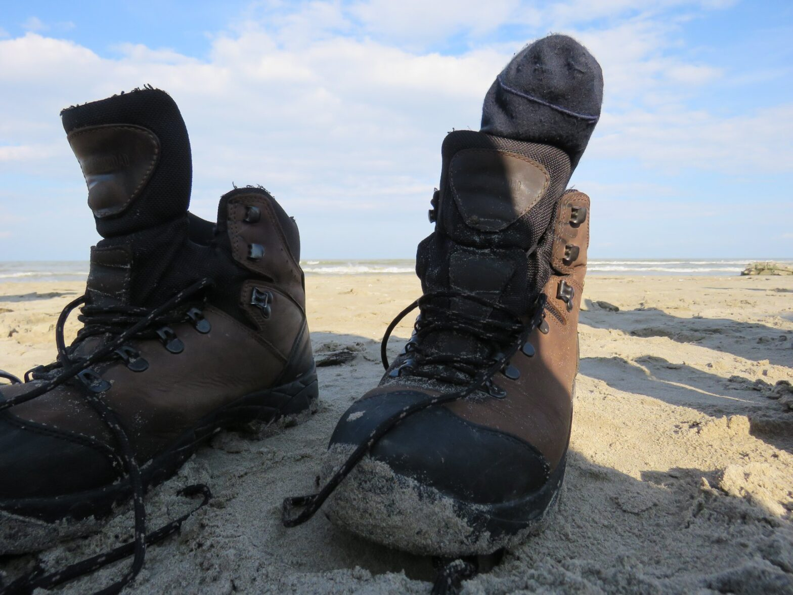

Cum a fost la Sfântu Gheorghe în 2019

Nici nu am ajuns bine în Tulcea și deja s-a pierdut ceva. Miruna (fiind și primul ei hike) și-a uitat/pierdut sacul de dormit în tren. Noi am făcut glume pe seama situației în care era. În următoarea zi ne-am văzut cu un consilier local de la primărie, care ne-a împărtășit informații prețioase despre conducerea unei localități. Momentul spiritual ținut de Adi m-a făcut să conștientizez multe lucruri și a fost pentru mine cel mai semnificativ eveniment din acel hike. La plecare ne-am întâlnit cu cercetașii din Tulcea. Ne-au primit cu zâmbetul pe buze și ne-am jucat diverse. Ne cunoșteam de puțin timp, dar ne comportam ca și cum ne știam de o viață. În acea zi am realizat semnificația cuvintelor „marea familie scout”.
De data aceasta aventura noastră s-a petrecut la Sf Gheorghe. Ca să ajungem până acolo, am luat trenul și apoi catamaranul, făcând aproximativ jumătate de zi pe drum. Ajunși acolo, ne-am cazat la Green Village în căbănuțe. A fost plăcut să stăm acolo, deoarece căsuțele erau făcute din lemn și paie, ceea ce le dădea un aspect rustic.
Alina, explorator
Zilele petrecute în Sf Gheorghe au fost minunate, pline de peripeții. În prima zi, când am ajuns și ne-am dat jos din barcă, a început să plouă, așa că ne-am grăbit să ajungem cât mai repede la locul de cazare.
A doua zi, după ce am mâncat și ne-am făcut încălzirea de dimineață, am pornit în plimbare până la primăria din oraș ca să stăm de vorbă cu primarul și să aflăm câte ceva despre istoria orașului. Din păcate, imediat ce am intrat în primărie a început să plouă din nou, așa că am mers pe ploaie înapoi la căbănuțe.
A treia zi am mers la plajă, unde am avut un curs despre ce trebuie să faci în caz de insolație. Am mai mers și la farul din oraș ca să urcăm în el, dar din păcate paznicul nu ne-a lăsat să intrăm și ne-a mai prins și ploaia pe drum.
În sfârșit, în ultima zi, planul era să ne trezim cu toții la 5, ca la 5:40 să mergem să vedem răsăritul de pe plajă. La 5 jumate doar patru dintre noi erau treji, așa că am renunțat la ideea cu răsăritul. La 8 pleca catamaranul, iar noi era să-l pierdem, pentru că unii dintre noi au fost leneși și au dormit până la 7:40, ținând cont că făceam cel puțin un sfert de oră până la debarcader. În fine, am alergat până la debarcader și l-am prins până la urmă, dar asta doar datorită căpitanului care a fost suficient de drăguț încât să nu pornească în timp ce 30 de inși cu ghiozdane în spate alergau de rupeau pământul înspre barcă.
În concluzie, chiar dacă nu am prins cea mai frumoasă vreme, ne-am distrat și asta e tot ce contează. Sper să mai am ocazia să vizitez această localitate! 🙂
Daria Brunetă, temerar
Primăvara aceasta am avut ocazia de a petrece o dimineață alături de cei de la Cabana Scout în Tulcea. Ne-am distrat alături de ei împărtășind și schimbând jocuri cercetășești și sperăm că experiența a fost una mutuală, iar data viitoare când ne întâlnim poate vom avea mai mult timp la dispoziție pentru a ne cunoaște mai bine între noi.
Radu Pascale, explorator, CL Lotus Tulcea